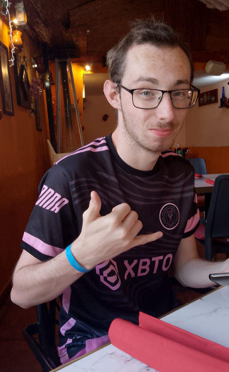

Introductie
Hallo! Mijn naam is Milan, ik ben 19 jaar en een enthousiaste software developer met een passie voor gaming en webontwikkeling.
Achtergrond
Ik zit momenteel in mijn afstudeerjaar van de studie Software Development, waar ik me richt op het ontwikkelen van praktische vaardigheden in verschillende programmeertalen.
Tijdens mijn opleiding heb ik diverse projecten uitgevoerd, waaronder webapplicaties, wat mijn technische kennis en probleemoplossend vermogen heeft vergroot.
Daarnaast werk ik al 2,5 jaar in de horeca bij Dordts Genoegen als bediening. Deze ervaring heeft me waardevolle sociale vaardigheden, teamwork en klantgerichtheid bijgebracht, die ik meeneem in mijn toekomstige carrière in de tech-industrie.
Hobby's
In mijn vrije tijd hou ik van gamen en sim racen, waar ik graag mijn vaardigheden verbeter en deelneem aan online competities.
Daarnaast geniet ik van programmeren; ik vind het leuk om nieuwe projecten te starten en mijn kennis uit te breiden. Ook ga ik regelmatig uit met vrienden, waar we samen leuke dingen doen en nieuwe plekken ontdekken.
Ik bezoek graag concerten en festivals, omdat ik de energie van live muziek geweldig vind. Reizen is ook een grote passie van me; ik vind het fantastisch om nieuwe culturen te leren kennen en unieke ervaringen op te doen.
Vaardigheden
- JavaScript
- HTML & CSS
- PHP (Laravel)
- Python
- Java
- C#
- WordPress